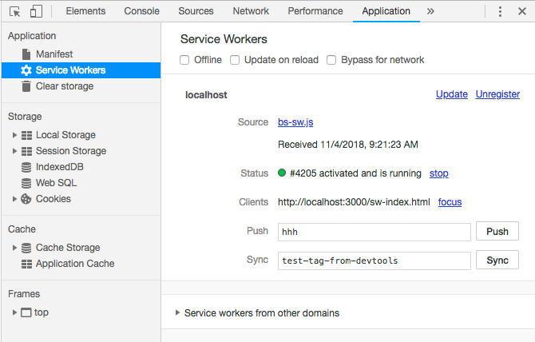

If you can see this message then your browser does support Service Worker.
To check/debug service worker (in chrome),
Insepct this page and go to Application --> Service Worker
there you can find your service worker and current status.
